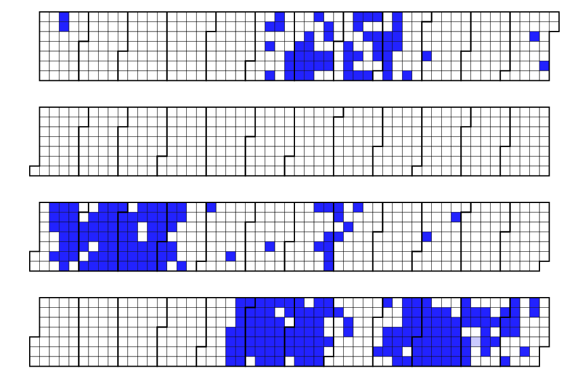

Current Projects
Live Resume

Quake3e
Planet Quake

Software Engineer, Network Admin, Mobile/Web/UI/UX Developer, Computer Scientist
YouTube Channel
Convergence
Theory
Quantum
Landscaping
St.
Valentine
Time
Machine
Believing
vs Knowing
Personal
Philosophy
Women's
Medicine
I am
Jinn
+1 (480) 466-0856
bjcullinan@gmail.com
(text messages welcome)
12205 Rustler Rd
Flagstaff, Arizona 86004
bjcullinan@gmail.com
+1 (480) 466-0856
Citizenship: Yes
Special Hiring Authority: Person with Disability
Federal Experience: None (on-going?)
Clearance: Level 0 (internet?)
OBJECTIVE: To obtain a full time position in public service with the FBI as a residential field agent.
SKILLS SUMMARY: Fast context switching, easy to focus, quick learning individual. Over 24 years of programming experience in Computer Science, computer programming, web technologies, user-experience development, and data managements. Over 10 years of multi-cultural study, philosophy, cognative bias, psychology, and theology. Multi-lingual with extensive understanding of the English language, and a basic understanding of Polish (Mandarin and Arabic pending). Deployed multiple business ventures complete with monetization on cloud platforms, as well as self-hosted, on premise solutions. I am driven, highly trained, technologist and contradictarian, with an emphasis on compassion and empathy towards others.
EMPLOYMENT HISTORY
Sitewat.ch
Front-end Developer
$10,000 over 1.5 years
As a Front-end developer at Sitewat.ch I implemented various interfaces for use with a web-security scanning tool
similar to pentest-tools.com required by Authorize.NET. I implemented web-safe standards according to Owasp.org,
and presented customers with a unified user experience for viewing possible vunerabilities in their
platform. My employer applied for many CVEs and credited all three team-mates on Google Security
Hall-of-Fame.
EPIC Research & Diagnostics
Software Engineer & Network Administrator
$200,000 over 2.5 years
As a software engineer for a start-up medical company, I was required to "wear multiple hats". This meant
including myself in business planning meetings, financial discussions, option vesting, military contract
proposals, FDA DNVO
submissions, data integrity, formal process improvement.
I started by creating a data entry database to migrate written records to digital form using Microsoft SQL server
for storage and querying. Data was entered by workers from a temp-hiring agency, so I provided basic level
technical support, any time there was confusion for a field, basic training, and user account creation through
>Active Directory (Microsoft LDAP).
I wrote a kiosk to use along side the medical device to minimize network risk and simplify workflow for hospital
technicians.
I implemented a Windows Business Server, complete with Exchange, networked file access, file-system revision
history, RAID mirroring, Exchange email, Active Directory, Group Policy coinciding
with a network policy that adheres to CFR 21 Part 11, general ITSM support, rackmounted servers for job
processing and on-premise "cloud"-like virtual machines with Hyper-V, Microsoft SQL Server
Finally, a colleague and I implement a "cloud"-like medical data record server in Microsoft MVC (a
successor to Master pages). This service assigned a geographic location to each medical device in the field, and
synchronized data between the client facing kiosk and the on-premise backend. The web-based system also presented
doctors with a portal to log in and review patient records remotely.
Patient records were displayed similar to the kiosk. At that time, I decided it would be a huge benefit to the
business to rewrite the client software using Window Presentation Foundation controls and remove some of
the 3rd party libraries. I was also able to reduce the processing time from 10 minutes to 10 seconds, and process
videographic snapshots of the patient scan. I wrote an automated validation process that tested the same
images with old and new versions of the client software. I used Selenium to validate the user experience of
the front-end web interface.
Study Sauce
Principal Engineer
$300,000 over 3 years
During my tenure, the owner and I designed and developer 3 unique platforms. The first platform was primarily a
marketing and sales front-end to test the target market for the minimally viable product. Students
would enter an individual, authenticated interface and enter their class schedule. When finished, we converted
their schedule to a comprehensive week plan complete with when they should study each topic. This was to
demonstrate and teach the student about time / work / study management, and encourage interleaving.
The second product expanded on the studying idea by making the class schedule the first step in an online learning
course. The course had 15 individual lessons, each lesson used gamification by providing a video tutorial,
asking a few simple quiz questions, and then giving the student a badge reward. This was meant to incentivize the
student to come back and complete future lessons. We also implemented A/B marketing using Google marketing
goals. This presented a specific percent of our traffic with two different landing pages based on the concept we
were testing.
The third product was an spaced-repitition system. "[We wanted to make somethig fun]". This was an app that
worked
natively on iOS and had a matching web-based user experience. The app kept track of progress and then
synchronized with the backend service for persistent database storage. The web-based administration offered
teachers a way to change content that was then synchronized to every student using the app client.
Spaced-repitition is a technique Jeopardy players and medical students alike use to memorize a lot of content
about a subject. It works by presenting the entire set of information on the first day of use, then only
presenting wrongly answered flash cards on the subsequent days of use.
That is, if a card is answered incorrectly,
it's presented the next day, if the answer is correct, the next day is skipped and it is reviewed 2 days later, if
it is answered correctly again, it isn't presented until day 5, day 10, day 20, day 30, and so on. By spacing out
when the
correct information is reviewed and increasing the freqeuncy for incorrect answer, this improve memory retention
and the ability to recall the correct answer quickly.
Charles Schwab
Software Engineer
$60,000 over 4 months
In a short sprint at this company, I began to observe oddities of corporate behavior. In between being nagged by
my freshly assigned project manager over elusive "employee training", and other managers about "what firm
do your represent?", I investigated the company's corporate structure. Their internet "social network" was
anything but social, built on Microsoft Sharepoint.
Internally, attitudes we moot, people came to work, kept to themselves, formed alliances with people who spoke the
same language. The building was structured more like a money-data vault with very little sunlight. The basement
floor I was assigned to was full of anti-social contractors. Champagne Charlie could afford to keep me
around but I was let go for my "attitude".
While trying to rationalize why such a significant company would intentionally "Manage me out" (yes, this
is a real strategy), I had my first experience with Toast-masters. This seems like a great way for employees to
get to know one another, and learn about public speaking. Charle's Schwab apparently offered "learning
tracks" to their employees and would sponsor testing and certifications. In particular a track to becoming an ITSM
"security manager" with zero coding experience.
One of the more exciting events was a "Kaizen" workshop formed for employees. This was a good way to
introduce continuous integration style practices, in a formalized way, to people who haven't studied
Agile and require lots of structure. Tried not to take offense when another employee passive-agressively
expressed that I "needed to get up to speed". Out of this meeting, my team was inspired to brainstorm ways their
project applies to business needs. This was great because I had a lot of experience brainstorming outside
of the basement, but all ideas during the session were still confined to a very small box in the form of a
window-less conference room.
Swiftpage
Senior Software Engineer
$100,000 over 14 months
The same day of my release from my previous company, I was invited to interview at a small-business
marketing company. This was particularly interesting because my father's manufacturing company is a client. I saw
this as both a way to better understand marketing, and even improve upon a product his company relied on. With his
advice to "work for a small-business", I was excited to contribute.
During my tenure, realizing my propensity for quelling disorderly behavior, I was as minimally disorderly
as possible. I tested networking features by using reddit.com/NSFW from the bathroom. They did indeed implement a
censhorship system on their internet connection, the results were abstract to me, something I'd like to see
changed for remote-workers and personal-accountability.
Human Resources implemented a policy for "unlimited paid-time-off". This is a psychological trick to get people to
take less time off, feeling like it's always there when they need it. I worked an entire year, about 3,500 hours
learning NodeJS without taking a single day off, even during the Christmas holiday when most of the office was
empty. Ironically, when I first entered the company, a woman was begging for time off over conference calls. This
is a failing policy and people should be compensated fairly for their time.
The development process consisted of employees trying to avoid an antiquated megolith written with overly burdened
state-management design principals ("feature completness", see Microsoft Code-Complete). When a change was
integrated the system would need to be update after work hours on Wednesday nights. If the change caused a failure
in the test-automation suite that was both precious and lacking "integration tests" the entire change would
be rolled back and attempted again the next night. It was the absolute worse possible method of avoiding
continuous integration (in software, solutions were widely available from major distributors).
The company offered a "learning track" and modes for self-improvement and even made their Job description sound
like they would pay for, or contribute to my education. At one point LinkedIn Learning was advertised to employees
in the office, and they offered sponsorship. I spent the entire month programming on the work project, and using
my secondary monitor to absorb programing and management courses on LinkedIn. When the month trial period expired,
LinkedIn Learning billed my personal account instead of the business account I had joined through.
Eventually, the work became too much, when I witnessed other managers in the office yelling at my boss to change
the pricing model to perpetuate the multi-level marketing sales. I offered to take my boss to lunch after he told
me that "the company has high expectations of me" without formalizing or writing those expectations down. Employee
reviews were conducted through ADP, at the beginning of the year he asked me for "what goals I would like to
accomplish". These goals were never readdressed, and at the end of the year, the goals my boss wrote into ADP had
nothing to do with the goals I sent him at the beginning of the year. My boss criticized my in front of other
employees in addition to the criticism in our monthly one-on-one meetings. I had enough, I was being "Managed
out".
Sabbatical
Indentured Servitude
$60,000 over 2 years
Realizing my mind wasn't fit for corporate or the small-business world, I turned my study to something more
philosphical. I tried to get to know people through hosting. I applied for a job in San Franscisco with digit.co.
I realized quickly the financial sector would not be kind to me.
I left the US for 3 months to live in Poland. I cashed out all my credit cards. I learned what it meant to live
with a packed suitcase. I studied philosophy, The Bible, Hinduism, Buddhism, Judaism, and spiritual religions. I
navigated a foriegn country with my wife, I was amazed by how things had progressed having not been to Europe for
10 years. Internet was widely available, dozens of American services like Uber and Airbnb were widely
available. I was amazed that censorship of American TV programs was still common practice. Despite being an
America and paying for HBO, I wasn't allowed to watch the same HBO programs in Europe.
I became a father in Poland after American doctors told my wife that she would have a natural birth if they
decided that was the safest method of delivery. I saw a pattern of abuse of authority when doctors now
promote cesarean surgeries. They can collect more money from insurance companies, not because the recovery or
delivery is safer. Doctors told my wife that "In America the doctor decides what is best for you, and if you don't
like it you can go back to Poland." after she requested an episiotomy. Doctors in America don't practice medicine
once they leave college and get to a specific level of authority.
I Poland we enjoyed many beautiful gardens. My wife enjoyed speaking her native language and I enjoyed learning
it. She taught me about history, and I realized I could stand on a side-walk that was older than all of United
States history. I was catered to at hospitals. I walked in one day with a kidney pain and was able to talk to a
doctor immediately, they prescribed a rosemary oil based medicine and I didn't owe thousands or even hundreds of
dollars for the visit.
The doctors treated my wife with respect. They didn't question where she came from, they did ask why she came to
Poland and we explained how doctors have no problem betraying people's trust in American medicine. The hospital
refunded the money we spent on consultations we had before paying for a birthing package. This was absolutely
astounding compared to Phoenix, Arizona doctors that wanted nearly $20,000 up-front with no refunds should
something happen, that price does not include the hospital bill. We were able to pay for child delivery out of
pocket.
Airline companies act differently in Europe, almost like they want people to travel easily. The only difficulty
was in Sweden when they required we come to the airport 4 hours ahead of time with a printed copy of our baording
pass, the charged a $40 fine for printing out my ticket and being late after my wife argued with them not to
cancel our flight. This was a flagrant abuse of power and the women behind us was not so lucky, they cancelled her
flight. We flew Nordic Airlines before it was renamed to Norse Atlantic because of American politics not being
able to compete with a government that subsidized flights thanks to being a large oil-refining country.
We encountered systemic "dragging of feet" visiting government offices and nagivating paperwork. We completed a
Consulary Report of Birth Abroad, and gained United States and Polish citizenship (dual-citizenship)
for our first born son within
the month following his birth. I realized in the hospital that I'm living in a time period where circumcision
could be considered a "form of abuse", this weighed on me heavily, but ultimately after researching the genitals
couldn't be cleaned until 3 years of age, we decided to circumcise. This was an "uncommon request" hospital staff
explained, but they were able to source a female Jewish surgeon from New York. I'm amazed at how perfectly well
our trip went despite politics making it appear as though The Old World is behind America technologically.
American doctors, unfamiliar with Noam Chomsky's opinions on American Exceptionalism, explained to us that America
is the best place in the world for medicine. I've laid this false information to rest, it is banter and nothing
more, people are mostly the same everywhere, some ambitious and educated, some lazy and avoiding work, and some
happy to do food deliveries with American software platforms.
idTech 3 Game Engine
Game Engine Developer
$60,000 over 2 years
When I first approached this game-engine, I intended to improve the loading experience of QuakeJS. QuakeJS is a
Web Assembly / emscripten port of Quake 3 to the web-browser. The loading process took about 10 minutes over
cellular network, and desktop was not much better. It first loads the Trial Demo content, about 300 MBs of data.
Then it loads additional game data to run custom levels ("maps" as they are called in game).
My approach was to minimize the number of line changes stylistically. That is, rather than moving and renaming
functions, I would use a pre-compiler macro to create the necessary logical breaks in the function, then call the
new broken up function in the same sequence that QuakeJS did. Since I already had a working implementation, it was
easy for me to see if my change caused a breaking error, or if it was indeed calling the function just like the
original port, only with less code changes.
Once completed with the code changes, I iterated on development trying to find the most burdensome pieces of code.
i.e. The parts that added the most complexity through new variables, lots of line changes, bug reports,etc. One of
the biggest hurdles was this idea of a file manifest.json. This was hard to create, and people ran into errors
trying to generate additional content through the repack.js script. The author's intention was to repackage game
assets to be smaller and compatible with web. I reapproached this issue 3 times during my development.
Once I had a solid foundation and a working Web Assembly build, I attempted to distill out of emscripten only the
system-level APIs that it required to run this particular engine. I expected to double the performance, and that's
exactly what came from the effort. By removing the complexity implemented by emscripten's burdensome file-system
APIs, extra work being done by the GL emulator, and memory leaking from Audio spatialization with SDL2, I was able
to double the performance. Maps that used to only run well at 30 frames per second (FPS) could now run at 60FPS
and in-general I could run the engine at over 200 FPS inside the browser window.
I then turned my focus to game developement, I wanted to implement a Portal system similar to prioprietary
closed-source forks. I was able to adapt some of the code left-over from the original game that was left unused in
the source code. I copied some of the models from another Portal implementation and implemented the missing
functionality to display droppable portal or wall mounted portals like the game Portal from Valve. This was an
interesting project because it required a fairly in depth understanding of renderer code and limitations enforced
from legacy systems.
I realized this work was much too fun for one person and I reached out to other community leaders like to owner of
lvlworld.com with an idea to present all the lvlworld maps in 3D as a fun exploration tool for visitors. He loved
the idea and eventually rewrote my entire effort to his own accord. I felt terrible about not being able to
support the website anymore, but ultimately it felt like a win having another proprietary, closed source
implementation as a good learning experience for the owner, Tig.
ACCOMPLISHMENTS
COMPUTER SOFTWARE
ADDITIONAL TRAINING
EDUCATION
BA - Bachelor's of Science in Computer Science, Northern Arizona University, Flagstaff, Arizona, 2010 (GPA 2.5)
HONORS AND AWARDS
None
VOLUNTEER WORK & COMMUNITY INVOLVEMENT
ACM - Association for Computing Machinery
IEEE - Institute of Electronics Engineers